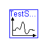
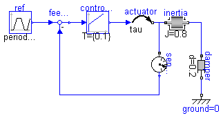

Modelica definition
model SamplingCase1
extends SensorBenchmark(redeclare SampleHoldSensor sensor(sample_interval=0.01));
end SamplingCase1;

Modelica definition
model SamplingCase2
extends SensorBenchmark(redeclare SampleHoldSensor sensor(sample_interval=0.015));
end SamplingCase2;

Modelica definition
model CountingCase1
extends SensorBenchmark(controller(k={10}), redeclare CountingSensor sensor(divisions=64, sample_interval=0.02));
end CountingCase1;

Modelica definition
model CountingCase2
extends SensorBenchmark(controller(k={10}), redeclare CountingSensor sensor(divisions=64, sample_interval=0.06));
end CountingCase2;

Modelica definition
model PeriodCase1
extends SensorBenchmark(redeclare PeriodSensor sensor(divisions=16));
end PeriodCase1;

Modelica definition
model PeriodCase2
extends SensorBenchmark(redeclare PeriodSensor sensor(divisions=8));
end PeriodCase2;

Modelica definition
model QuantizedCase1
extends SensorBenchmark(redeclare QuantizedSensor sensor(sample_interval=0.01, bits=8));
end QuantizedCase1;

Modelica definition
model QuantizedCase2
extends SensorBenchmark(redeclare QuantizedSensor sensor(sample_interval=0.01, bits=4));
end QuantizedCase2;
Modelica definition
model TestSampling
extends BookExamples.Icons.RunnableExample;
SensorBenchmark ideal;
SamplingCase1 sampling1;
SamplingCase2 sampling2;
end TestSampling;
Modelica definition
model TestCounting
extends BookExamples.Icons.RunnableExample;
SensorBenchmark ideal(controller(k={10}));
CountingCase1 counting1;
CountingCase2 counting2;
end TestCounting;
Modelica definition
model TestPeriod
extends BookExamples.Icons.RunnableExample;
SensorBenchmark ideal;
PeriodCase1 period1;
PeriodCase2 period2;
end TestPeriod;
Modelica definition
model TestQuantized
extends BookExamples.Icons.RunnableExample;
SensorBenchmark ideal;
QuantizedCase1 quantized1;
QuantizedCase2 quantized2;
end TestQuantized;
Modelica definition
model TestAll
extends BookExamples.Icons.RunnableExample;
SensorBenchmark ideal1;
SensorBenchmark ideal2(controller(k={10}));
SamplingCase1 sampling1;
SamplingCase2 sampling2;
CountingCase1 counting1;
CountingCase2 counting2;
PeriodCase1 period1;
PeriodCase2 period2;
QuantizedCase1 quantized1;
QuantizedCase2 quantized2;
end TestAll;
HTML-documentation generated by Dymola Wed Sep 10 16:48:14 2003
.